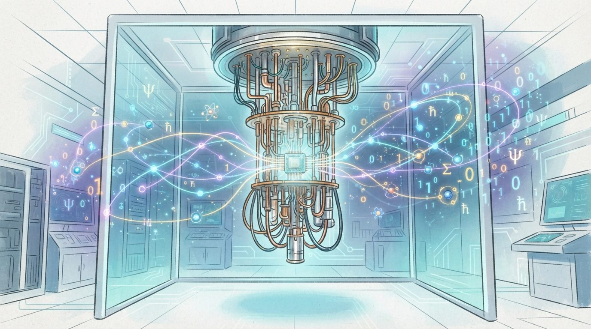

Sangoeroep · 2026
Toward Quantum Computing Menuju Quantum Computing
Sebuah perjalanan dari fisika yang "aneh" menuju mesin yang akan mendefinisikan ulang batas kemampuan manusia — dari laboratorium superkondukting hingga keputusan yang menyentuh kehidupan kita sehari-hari. A journey from "strange" physics to machines that will redefine the boundaries of human capability — from superconducting laboratories to decisions that touch our everyday lives.
Bagian 1Chapter 1
Di awal abad ke-20, para fisikawan menemukan bahwa alam semesta di skala terkecil bekerja dengan cara yang sama sekali berbeda dari intuisi kita. Tiga prinsip menjadi pondasinya. At the start of the 20th century, physicists discovered that the universe at its smallest scale operates in ways completely contrary to our intuition. Three principles form its foundation.
Ironisnya, eksperimen Bell (1964) dan Nobel 2022 membuktikan: alam semesta memang bermain dadu — dan lebih aneh dari yang dibayangkan Einstein. Ironically, Bell's experiments (1964) and the 2022 Nobel Prize proved: the universe does play dice — and is stranger than Einstein imagined.
Pada 1935, Erwin Schrödinger merancang eksperimen pikiran untuk menyindir — bukan mendukung — implikasi mekanika kuantum yang menurutnya absurd. Seekor kucing dikurung dalam kotak tertutup bersama sebuah atom radioaktif, detektor Geiger, palu, dan botol racun. Jika atom itu meluruh (peristiwa kuantum probabilistik), detektor memicu palu memecahkan botol racun, membunuh kucing. Jika tidak, kucing tetap hidup. In 1935, Erwin Schrödinger devised a thought experiment to mock — not endorse — an implication of quantum mechanics he found absurd. A cat is sealed in a box with a radioactive atom, a Geiger counter, a hammer, and a vial of poison. If the atom decays (a probabilistic quantum event), the detector triggers the hammer to break the vial, killing the cat. If not, the cat lives.
Karena atom radioaktif berada dalam superposisi "meluruh" dan "belum meluruh" sebelum diamati, penerapan literal aturan kuantum berarti seluruh sistem — termasuk kucing — juga berada dalam superposisi hidup dan mati sekaligus, sampai kotak dibuka dan diukur. Schrödinger ingin menunjukkan: aturan yang masuk akal untuk elektron menjadi absurd ketika diperbesar ke skala kucing. Pertanyaannya belum sepenuhnya terjawab hingga hari ini: di mana tepatnya batas antara dunia kuantum yang probabilistik dan dunia sehari-hari yang pasti? Inilah yang disebut masalah pengukuran (measurement problem). Because the radioactive atom is in a superposition of "decayed" and "not decayed" before observation, literally applying quantum rules means the entire system — including the cat — is also in superposition, both alive and dead, until the box is opened and measured. Schrödinger wanted to show that rules sensible for an electron become absurd when scaled up to a cat. The question remains unresolved today: where exactly is the boundary between the probabilistic quantum world and the definite everyday world? This is known as the measurement problem.
Persamaan matematis mekanika kuantum tidak diperdebatkan — semua fisikawan sepakat pada rumusnya, dan prediksinya terverifikasi hingga presisi luar biasa. Yang diperdebatkan adalah apa artinya secara fisik. Berikut empat interpretasi utama yang masih bersaing hingga hari ini. The mathematics of quantum mechanics is not disputed — all physicists agree on the formulas, and predictions are verified to extraordinary precision. What is disputed is what it physically means. Below are four leading interpretations still competing today.
Tidak satu pun interpretasi ini bisa dibedakan secara eksperimental hari ini — perbedaannya bersifat filosofis, bukan empiris. Fisikawan bisa sepakat pada matematika sambil tidak sepakat pada makna. None of these interpretations can currently be distinguished experimentally — the difference is philosophical, not empirical. Physicists can agree on the mathematics while disagreeing on its meaning.
Bagian 2Chapter 2
Fisika kuantum bukan hanya milik laboratorium. Ia sudah ada di HP Anda (semikonduktor, laser), di MRI rumah sakit, bahkan dalam cara orang modern memaknai hidup dan pikiran mereka. Quantum physics isn't just for laboratories. It's already in your phone (semiconductors, lasers), in hospital MRIs, and even in how modern people make sense of life and their own minds.
Bagian 3Chapter 3
Perjalanannya dimulai bukan dari insinyur, melainkan dari fisikawan yang bertanya: "Bisakah alam semesta sendiri menjadi komputer?" The journey began not with engineers, but with physicists asking: "Could the universe itself be a computer?"
Timeline hanya menunjukkan tanggal dan penemuan. Namun di baliknya ada manusia dengan kepribadian, keraguan, dan jalan hidup yang jarang lurus. Tiga sosok berikut mewakili tiga generasi berbeda dalam sejarah quantum computing. A timeline only shows dates and discoveries. Behind it are people with personalities, doubts, and rarely straightforward paths. The following three figures represent three different generations in quantum computing history.
Bagian 4Chapter 4
Quantum computing bukan solusi untuk semua masalah. Ia unggul di kelas masalah tertentu — dan memahami perbedaan ini adalah kunci literasi kuantum. Quantum computing is not a solution for all problems. It excels at specific problem classes — and understanding this distinction is key to quantum literacy.
Estimasi penulis berdasarkan status penelitian publik 2026. Bukan proyeksi resmi industri. Author's estimate based on public research status 2026. Not an official industry projection.
Hampir seluruh keamanan digital dunia — perbankan online, pesan terenkripsi, sertifikat situs web — bersandar pada dua keluarga algoritma: RSA dan Elliptic Curve Cryptography (ECC). Keduanya aman terhadap komputer klasik karena mengandalkan kesulitan memfaktorkan bilangan besar atau menyelesaikan logaritma diskrit — masalah yang butuh miliaran tahun untuk dipecahkan komputer biasa. Algoritma Shor mengubah semua itu: pada komputer kuantum yang cukup besar, masalah yang sama bisa diselesaikan dalam hitungan jam. Nearly all of the world's digital security — online banking, encrypted messaging, website certificates — rests on two algorithm families: RSA and Elliptic Curve Cryptography (ECC). Both are secure against classical computers because they rely on the difficulty of factoring large numbers or solving discrete logarithms — problems that would take ordinary computers billions of years. Shor's algorithm changes all that: on a sufficiently large quantum computer, the same problems could be solved in hours.
"Y2Q" (Years to Quantum) merujuk pada perkiraan kapan komputer kuantum cukup besar untuk memecahkan RSA-2048 — diperkirakan butuh sekitar ~4.000 qubit logis (yang berarti jutaan qubit fisik dengan koreksi error saat ini). Estimasi para ahli berkisar antara 2030–2040, meski ketidakpastiannya besar. Yang pasti: migrasi sistem kripto skala besar butuh bertahun-tahun, sehingga persiapan tidak bisa ditunda sampai ancaman itu nyata. "Y2Q" (Years to Quantum) refers to the estimated point when quantum computers become large enough to break RSA-2048 — thought to require roughly ~4,000 logical qubits (translating to millions of physical qubits at today's error-correction overhead). Expert estimates range 2030–2040, though uncertainty is substantial. What's certain: large-scale cryptographic migration takes years, so preparation cannot wait until the threat is imminent.
Berbeda dari PQC (yang menahan serangan kuantum), QRNG memanfaatkan keacakan kuantum sejati — bukan pseudo-random dari algoritma klasik — untuk menghasilkan kunci kriptografi. Sudah komersial lewat perusahaan seperti ID Quantique (Swiss) dan QuintessenceLabs (Australia), dipakai bank dan pusat data yang butuh keacakan bersertifikat. Unlike PQC (which resists quantum attacks), QRNG harnesses genuine quantum randomness — not classical pseudo-randomness — to generate cryptographic keys. Already commercial through companies like ID Quantique (Switzerland) and QuintessenceLabs (Australia), used by banks and data centers requiring certified randomness.
NIST merekomendasikan organisasi mulai migrasi ke PQC selambat-lambatnya 2030 untuk sistem sensitif — proses migrasi kriptografi skala enterprise historisnya memakan 5–10 tahun. NIST recommends organizations begin PQC migration no later than 2030 for sensitive systems — enterprise-scale cryptographic migration has historically taken 5–10 years.
Bagian 5Chapter 5
Investasi global dalam quantum computing mencapai lebih dari $35 miliar pada 2023–2025 — gabungan dari modal ventura, program pemerintah, dan R&D korporat. Ini bukan spekulasi; ini persaingan strategis. Global investment in quantum computing exceeded $35 billion in 2023–2025 — combining venture capital, government programs, and corporate R&D. This is not speculation; it is strategic competition.
Quantum computing sudah lama berhenti menjadi urusan laboratorium semata. Ia kini diperlakukan negara-negara besar setara teknologi strategis seperti semikonduktor — sesuatu yang menentukan keunggulan ekonomi, militer, dan intelijen selama beberapa dekade ke depan. Itulah sebabnya investasi, kebijakan ekspor, dan perlombaan talenta di bidang ini bergerak jauh lebih cepat dari yang terlihat di permukaan. Quantum computing stopped being purely a laboratory concern long ago. Major powers now treat it as a strategic technology on par with semiconductors — something that will shape economic, military, and intelligence advantage for decades to come. That's why investment, export policy, and the talent race in this field move far faster than what's visible on the surface.
Quantum computing lahir dari tradisi fisika akademik yang sangat terbuka — makalah dipublikasikan, hasil direplikasi lintas negara. Namun begitu potensinya untuk memecahkan enkripsi militer menjadi jelas, sebagian riset mulai bergeser ke ranah tertutup. Ketegangan antara "sains untuk kemajuan bersama" dan "teknologi untuk keunggulan strategis" adalah dinamika inti yang akan terus membentuk lapangan ini. Quantum computing emerged from a highly open academic physics tradition — papers published, results replicated across borders. But once its potential to break military-grade encryption became clear, some research began shifting toward closed doors. The tension between "science for shared progress" and "technology for strategic advantage" is the core dynamic that will keep shaping this field.
Jumlah fisikawan dan insinyur kuantum berkualifikasi tinggi di dunia masih sangat terbatas — diperkirakan hanya ribuan orang secara global memiliki keahlian mendalam di bidang ini. Negara dan perusahaan besar bersaing ketat merekrut mereka, mirip pola perang talenta di AI beberapa tahun sebelumnya, dengan paket kompensasi dan kebebasan riset sebagai senjata utama. The pool of highly qualified quantum physicists and engineers worldwide remains very limited — estimated at only thousands of people globally with deep expertise in the field. Nations and major companies compete fiercely to recruit them, mirroring the AI talent war pattern of a few years earlier, with compensation packages and research freedom as the main weapons.
Naik satu level lebih tinggi dari sekadar perlombaan antarnegara: bagaimana posisi quantum computing dalam gambaran besar transformasi teknologi abad ini — bersama AI generatif, robotika, dan bioteknologi? Ada narasi populer yang menyatukan semuanya di bawah satu payung: the Singularity. Zooming out one level above the nation-to-nation race: where does quantum computing sit in the bigger picture of this century's technological transformation — alongside generative AI, robotics, and biotechnology? A popular narrative ties all of this together under one umbrella: the Singularity.
Pandangan yang lebih realistis: quantum computing, AI generatif, dan robotika adalah tiga kurva eksponensial yang berjalan paralel, dengan titik-titik pertemuan yang nyata namun spesifik — bukan satu gelombang tunggal menuju "singularity". Anda tidak perlu percaya penuh pada narasi singularity untuk mengakui bahwa gabungan ketiganya, dalam dekade-dekade mendatang, akan mengubah lanskap ekonomi dan geopolitik secara mendalam — dengan atau tanpa titik ledakan tunggal yang dramatis. A more grounded view: quantum computing, generative AI, and robotics are three exponential curves running in parallel, with real but specific points of convergence — not one single wave toward a "singularity." You don't need to fully buy the singularity narrative to acknowledge that the combination of all three, over coming decades, will profoundly reshape the economic and geopolitical landscape — with or without one dramatic single tipping point.
Bagian 6Chapter 6
Quantum computing bukan sekadar teknologi baru — ia adalah perubahan paradigma yang akan menyentuh kesehatan, keamanan, energi, ekonomi, dan cara manusia memahami dirinya sendiri. Quantum computing is not just a new technology — it is a paradigm shift that will touch health, security, energy, economics, and how humans understand themselves.
Ini bukan ancaman masa depan — ini sedang terjadi sekarang. "Harvest now, decrypt later" (HNDL) adalah strategi mengumpulkan dan menyimpan data terenkripsi hari ini, dengan asumsi bahwa suatu hari nanti — 10, 15, atau 20 tahun lagi — komputer kuantum akan cukup kuat untuk mendekripsinya. Data yang dicuri hari ini menjadi "bom waktu" yang menunggu kunci kuantumnya matang. This isn't a future threat — it is happening right now. "Harvest now, decrypt later" (HNDL) is the strategy of collecting and storing encrypted data today, on the assumption that someday — in 10, 15, or 20 years — quantum computers will be powerful enough to decrypt it. Data stolen today becomes a "time bomb" waiting for its quantum key to mature.
Michele Mosca (2018) merumuskan cara sederhana menilai urgensi: bandingkan X (berapa lama data harus tetap rahasia), Y (berapa lama migrasi ke PQC akan memakan waktu), dan Z (berapa tahun lagi sampai komputer kuantum yang relevan muncul). Jika X + Y > Z — organisasi sudah terlambat, karena data yang dienkripsi hari ini akan tetap rentan saat komputer kuantum itu tiba. Michele Mosca (2018) formulated a simple way to assess urgency: compare X (how long data must stay secret), Y (how long PQC migration will take), and Z (how many years until a relevant quantum computer arrives). If X + Y > Z — an organization is already too late, since data encrypted today will still be vulnerable once that quantum computer arrives.
Beberapa perusahaan teknologi besar telah mulai mengaktifkan enkripsi hibrida (klasik + PQC) pada sebagian trafik mereka sejak sekitar 2023–2024 — sebagai langkah awal migrasi sebelum standar NIST final. Sektor perbankan dan pemerintahan umumnya bergerak lebih lambat karena ketergantungan pada sistem lama (legacy systems) yang sulit diganti cepat. Several major technology companies began enabling hybrid encryption (classical + PQC) on portions of their traffic around 2023–2024 — an early migration step ahead of NIST's final standards. Banking and government sectors generally move slower due to dependence on legacy systems that are difficult to replace quickly.
Angka dan contoh sektor bersifat indikatif berdasarkan wacana publik 2026 — bukan daftar konfirmasi resmi dari perusahaan/lembaga tertentu. Figures and sector examples are indicative, based on 2026 public discourse — not an official confirmed list from specific companies or agencies.
RujukanReference
53 istilah kunci quantum computing, disusun alfabetis, untuk dirujuk kapan saja saat membaca bab-bab sebelumnya — dari dasar fisika hingga industri. 53 key quantum computing terms, arranged alphabetically, to reference anytime while reading earlier chapters — from foundational physics to industry.
Tanya JawabQ&A
20 pertanyaan paling umum tentang quantum computing, dijawab sejujur mungkin — termasuk mengakui ketika jawabannya "belum tahu" atau "tergantung". 20 of the most common questions about quantum computing, answered as honestly as possible — including admitting when the answer is "not yet known" or "it depends".
PenutupClosing
Quantum computing adalah salah satu pencapaian intelektual paling luar biasa dalam sejarah manusia. Ia juga membawa tanggung jawab yang belum pernah ada sebelumnya. Quantum computing is one of the most extraordinary intellectual achievements in human history. It also brings responsibilities that have never existed before.
Pertama, jaga perspektif waktu. Quantum computing tidak akan datang besok pagi dan mengubah segalanya. Ia adalah transformasi yang membutuhkan dekade — bukan tahun. Hype yang berlebihan sudah merugikan banyak investor dan pembuat kebijakan. Realitanya adalah: kita masih di era NISQ yang berisik dan penuh error. Yang sudah terbukti berguna hari ini masih sangat terbatas. First, maintain time perspective. Quantum computing will not arrive tomorrow morning and change everything. It is a transformation requiring decades — not years. Excessive hype has already harmed many investors and policymakers. The reality is: we are still in the noisy, error-prone NISQ era. What has proven useful today remains very limited.
Kedua, pisahkan sinyal dari kebisingan. Banyak klaim "quantum" di produk komersial, aplikasi kesehatan, dan motivasi diri adalah penyalahgunaan terminologi ilmiah. Ini tidak harus membuat kita sinis — tapi harus membuat kita kritis. Metafora kuantum untuk kehidupan bisa bermakna jika digunakan dengan jujur sebagai analogi, bukan klaim ilmiah. Second, separate signal from noise. Many "quantum" claims in commercial products, health applications, and self-motivation are misuse of scientific terminology. This need not make us cynical — but it should make us critical. Quantum metaphors for life can be meaningful when used honestly as analogy, not scientific claim.
Ketiga, mulai bersiap sekarang. Transisi ke post-quantum cryptography tidak bisa ditunda. "Harvest now, decrypt later" sudah terjadi. Organisasi dan pemerintah yang tidak mulai mempersiapkan infrastruktur keamanan kuantum hari ini akan menghadapi risiko serius dalam satu dekade ke depan. Third, start preparing now. Transition to post-quantum cryptography cannot be delayed. "Harvest now, decrypt later" is already happening. Organizations and governments that don't begin preparing quantum security infrastructure today will face serious risks within a decade.
Keempat, ini adalah pertanyaan kemanusiaan. Siapa yang mengontrol quantum computing masa depan? Akankah ia memperkuat demokrasi atau otoritarianisme? Akankah manfaatnya tersebar luas atau terkonsentrasi? Pertanyaan-pertanyaan ini tidak bisa dijawab oleh fisikawan atau insinyur saja — ini membutuhkan filsuf, ekonom, pembuat kebijakan, dan warga negara yang melek kuantum. Fourth, this is a human question. Who controls future quantum computing? Will it strengthen democracy or authoritarianism? Will its benefits spread widely or concentrate? These questions cannot be answered by physicists or engineers alone — they require philosophers, economists, policymakers, and quantum-literate citizens.
Akhirnya: Fisika kuantum mengajarkan satu hal yang melampaui semua aplikasi dan algoritmanya — bahwa alam semesta, di tingkat yang paling fundamental, adalah tempat yang jauh lebih kaya, lebih aneh, dan lebih mengejutkan dari yang pernah kita duga. Menuju quantum computing bukan hanya tentang mesin yang lebih cepat. Ia adalah undangan untuk melihat realitas dengan mata yang lebih luas — dan bertindak dengan kebijaksanaan yang sepadan. Finally: Quantum physics teaches one thing that transcends all its applications and algorithms — that the universe, at its most fundamental level, is a place far richer, stranger, and more surprising than we ever imagined. Moving toward quantum computing is not just about faster machines. It is an invitation to see reality with wider eyes — and to act with wisdom commensurate with that vision.
Ditulis olehWritten by Sangoeroep · 2026
Bagian dari seriPart of the series Ruang Baca